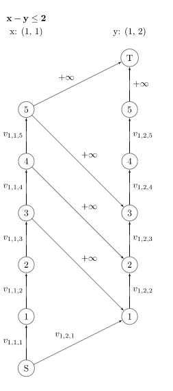

$start \ form \ 2019.\ 8.\ 10$
模板
无源汇有上下界可行流
有源汇有上下界最大流
有源汇有上下界最小流
有源汇有上下界最小费用流
题目
BZOJ280Emmy卖猪
你有$m$个猪圈，第$i$个猪圈初始有$a_i$头猪。依次到来$n$个顾客，每个顾客会指定几个猪圈，你可以先任意调换这些猪圈中的猪，再卖给这个顾客最多$b_i$头猪。最大化卖猪数量。（$n\leq100,m\leq1000$）
当一名顾客访问了几个猪圈之后，对他后面的几个人来说，由于可以预先调换，这几个猪圈就相当于同一个猪圈了。
$S$向每个猪圈连边，容量$a_i$，费用$0$
每个顾客向$T$连边，容量$b_i$，费用$0$
按时间遍历所有顾客，一个顾客所光顾的每个猪圈的最后访问者该名顾客连边，容量$INF$，费用$0$
最大流
NOI2008志愿者招募
一个项目需要$n$天完成，第$i$天需要至少$a_i$名志愿者。有$m$种志愿者，第$i$种志愿者每人代价为$c_i$，会从第$x_i$天工作到第$y_i$天，最小化招募费用。（$1 \leq n \leq 1000,1 \leq M \leq 10000$）
按时间建图
$S$ 向 点$1$ 连一条容量$INF$，费用$0$的边
$i$ 向 $i+1$ 连一条容量$(INF-a_i)$，费用为$0$的边
$i+1$向$T$连一条容量$INF$，费用$0$的边
对于第$i$名志愿者，连一条从$x_i$向$y_i+1$，容量$INF$，费用为$c_i$的边
最小费用最大流。若流量不足$INF$，则无解，否则所得最小费用即为答案
SCOI2007修车
$n$辆车同时抵达修理厂，修理厂有$m$个工人，$i$个工人修第$j$辆车需要$t_{ij}$的时间，一个工人只能同时修一辆车。最小化总等待时间。（$2 \leq m \leq 9 , 1 \leq n \leq 60$）
对于一名工人，找他修车的所有人需要等待的总时间为$1W_i+2W_i-1+…+i*W_1$
把每名工人拆成$n$个点，第$k$个点代表倒数第几个修，第$i$辆车向第$j$个工人的第$k$个点连边，容量为$1$，费用为$t_{j,i}*k$，表示第$i$辆车由第$j$个工人倒数第$k$个修理。
S向每辆车连容量$1$，费用$0$的边，表示工人的$n*k$个点向$T$连容量$1$，费用$0$的边
最小费用最大流
可以通过一边$spfa$增广一边建出需要的边来优化（$NOI2012$美食节code）
SDOI2009晨跑
$n$个点，$m$条边的图，除了$1$和$n$外，每个点只能经历一次。在满足从$1$到$n$的路径条数最多的情况下，最小化总路程。（若存在$1\rightarrow n$的边，这条边只能走一次。） （$1 \leq n \leq 200,1 \leq m \leq 20000$）
路径条数即为流量，总路程即为总费用
拆点$i$，$i+n$
$（u,v,w)$ 边 对应网络流图中的$(u+n,v,1,w)$ ，按原图建立即可
从 点 $1+n$ 到 点 $n$ 的最小费用最大流。
BZOJ4213贪吃蛇
给出$n*m$的棋盘，有一些障碍，定义蛇是一条至少包含两个格子的折线，蛇的任何部分不能重叠，蛇必须满足下列条件之一：
1、两头都在边界
2、蛇构成一个环
求覆盖整个棋盘的第一种蛇的最少数量，若不能够覆盖，输出$-1$
（$1 \leq n,m \leq 12$）
将图黑白染色，考虑第二种蛇，一个格子必然与四连通格子中的两个相连
因而$S$向黑点连容量限制$[2,2]$，费用为$0$的边，白点向$T$连容量限制$[2,2]$，费用为$0$的边。棋盘上黑点向相邻四个白点连容量限制$[0,1]$，费用为$0$的边。
考虑此时第一种蛇的意义，即花费$1$的代价使得边界上的黑点入度减$1$或白点出度减$1$。
所以，从边界上黑点向$T$连容量限制$[0,1]$，费用为$1$的边； 从$S$向边界上白点连容量限制$[0,1]$，费用为$1$的边。以表示上述实质。
有源汇有上下界最小费用可行流即可，由于每一条第一类蛇都在$S$和$T$各算了一次，答案要除以$2$
CQOI2012交换棋子
有一个$n$行$m$列的黑白棋盘，给出两个状态$s1$，$s2$，你每次可以交换两个相邻格子（相邻是指有公共边或公共顶点）中的棋子，最终达到目标状态。要求第$i$行第$j$列的格子最多只能参与$m_{ij}$次交换。求最小交换次数。（$1 \leq n,m \leq 20$）
将一个黑子的移动路径看做一条流，将一个点拆成三个，$inn(i)$，$mid(i)$，$out(i)$。
若一个点$x$在$s1$中是黑点，则从$S$向$mid(x)$连一条容量$1$，费用$0$的边，若$x$在$s2$中是黑点，则从$mid(x)$向$T$连一条容量$1$，费用$0$的边。
在图中，每个点的$out(x)$向八连通的点的$inn(x)$连边，容量$INF$，费用$1$。
$inn(x) \rightarrow mid(x)$ 和 $mid(x) \rightarrow out(x)$ 是为了限制点$x$的交换次数。当交换次数为偶数或$s1$和$s2$中点$x$颜色相同时，两边上的流量都是$\frac{m_x}{2}$。否则就将$m_x/ 2$剩下的那一流量加到是黑点的那一边去。因为它需要多出的一次来换出$/$换入
最小费用最大流
CEOI2008order
有$n$个工作，$m$种机器，每种机器你可以租或者买。 每个工作包括若干道工序，每道工序需要某种机器来完成,你可以通过购买或租用机器来完成。 求最大利润。（$1\leq n,m \leq 1200$）
考虑最小割
$S$向每个机器连权值为买该种机器的价值的边，每个机器向需要向它的工作连权值为租赁费用的边，每份工作向$T$连权值为完成该工作收益的边。
由于一旦割去代表购买一台机器的边就不会再割代表租用此台机器的边，一但一份工作无法获利就会割去代表做这项工作的边。因而用总收入值减去最小割即为最大获利。
国集happiness
高一一班的座位表是个$n*m$的矩阵，经过一个学期的相处，每个同学和前后左右相邻的同学互相成为了好朋友。这学期要分文理科了，每个同学对于选择文科与理科有着自己的喜悦值，而一对好朋友如果能同时选文科或者理科，那么他们又将收获一些喜悦值。
作为计算机竞赛教练的scp大老板，想知道如何分配可以使得全班的喜悦值总和最大。（$1 \leq n,m \leq 100$）
第一行两个正整数$n$，$m$。
接下来是六个矩阵
- 第一个矩阵为$n$行$m$列
此矩阵的第$i$行第$j$列的数字表示座位在第$i$行第$j$列的同学选择文科获得的喜悦值。
- 第二个矩阵为$n$行$m$列
此矩阵的第$i$行第$j$列的数字表示座位在第$i$行第$j$列的同学选择理科获得的喜悦值。
- 第三个矩阵为$n - 1$行$m$列
此矩阵的第i行第j列的数字表示座位在第i行第j列的同学与第$i + 1$行第$j$列的同学同时选择文科获得的额外喜悦值。
- 第四个矩阵为$n-1$ 行$m$列
此矩阵的第i行第j列的数字表示座位在第$i$行第$j$列的同学与第$i+1$ 行第$j$列的同学同时选择理科获得的额外喜悦值。
- 第五个矩阵为$n$行$m-1$列
此矩阵的第$i$行第$j$列的数字表示座位在第$i$行第$j$列的同学与第$i$行第$j+1$列的同学同时选择文科获得的额外喜悦值。
- 第六个矩阵为$n$行$m-1$列
此矩阵的第i行第j列的数字表示座位在第$i$行第$j$列的同学与第$i$行第$j+1$列的同学同时选择理科获得的额外喜悦值。
$Ans=所有权值-最小割$
见代码 code
BZOJ3774最优选择
一个$n*m$ 的方格图，控制某一个点要付出$A_{ij}$的代价。某个点如果被控制了，或者他周围的所有点（上下左右）都被控制了，那么他就算是被选择了的。一个点如果被选择了，那么可以得到$B_{ij}$的回报，选一个最优的方案，使得 回报-代价 尽可能大。（$1 \leq n,m \leq 50$）
如图，$u$为黑点，$v$为$u$相邻的白点。$A$为费用，$B$为收益，用收益之和减去最小割即为答案。
NOI2010海拔
一个$n*m$的网格，每条边的两个方向都有一定数目的人流，每个格点都有海拔，一个人爬坡需要付出高度差的代价，下坡不付出代价，左上角高度为$0$，右下角高度为$1$，求安排其它点高度最小化总代价。（$n,m \leq 500$）
不那么显然的，全图中点的高度只有$0$，$1$两种。
当所有点高度相同时，代价显然最小，而题目要求左上角高度$1$，右下角高度$0$，感性理解，代价最小时方格图由连着左上的一片$0$和连着右下角的一片$1$组成，即求网格图的最小割。
由于点（$250000+$）和边（$1000000+$）范围比较大，因而要使用对偶图跑$dijkstra$来代替网络流最小割。
$S$在左下侧，$T$在右上侧。路径左侧即为$0$的平原，路径右侧即为$1$的平原。有向边上的权值为从低原走上高原的人数。$dijkstra$
SDOI2010星际竞速
一个$n$个点$m$条边的有向无环图，边有边权。可以沿着边走，付出边权的代价，也可以进行“跃迁”，花费$A_i$的代价瞬移到点$i$。起点在图之外（第一次必须跃迁），求遍历所有点最小的代价。
（$1 \leq n \leq 800,1\leq m \leq 15000$）
$DAG$的最小路径覆盖求法：将点$i$拆成$i1$和$i2$，有向边$(u,v)$对应流图中$(u_2,v_1)$。容易发现流图是一张二分图。总点数-这张二分图的最大匹配 就是最少需要的边数。
$pro$：一开始可以看作每个点都由它本身（$len=0$）覆盖，一个匹配的实质是减少一条边，最大匹配就是整合最多的边，使得所需值最小。
$S$向$i_1$连容量$1$，费用$0$的边，向$i_2$连容量$1$，费用$A_i$的边，表示跃迁。
$(u,v,w)$连成$(u_1,v_1,1,w)$ （$u < v $）
$i_2$向$T$连容量$1$，费用$0$的边
最小费用最大流
SCOI2012奇怪的游戏
一个$n*m$的棋盘，每个格子上有一个数，每次操作会选择两个相邻的格子，并将上面的两个数各加$1$。求最少需要多少次操作才能使得棋盘上所有数都相同，如果无法达成则输出$-1$。
（$task \leq 10,1 \leq n,m \leq 40$ 所有数为正整数且小于$1e9$）
将棋盘黑白染色。设$numb$为黑格个数，$B$为初始时黑格上所有数之和；$numw$为白格个数，$W$为初始时白格上所有数之和。设最终棋盘上所有数都等于$X$。由于每次都是相邻的两个格子加一，因而白格和黑格增量相等，有 $numbX-B=numwX-W$，变形得$X=\frac{B-W}{numb-numw}$。
当$numb\neq numw$ 时$X$可以通过计算得出，再进行检验。
当$numb=numw$时，棋盘总格数必然是偶数，因而$n$和$m$至少有一个是偶数。所以当$X$可以达到时，$X+1$也一定可以通过再覆盖一层来达到，具有可二分性。
要检验一个$X$是否可行，只需要$S$向所有黑点连容量$X-val$的边，白点向$T$连容量$X-val$的边，黑点向周围的白点连容量$INF$的边。若能$S$的所有出边都能够流满，则$X$可行。
求出$X$后 $numbX-B$ 或 $numwX-W$ 即为操作次数
由于多组数据，我开始竟然用$T$表示$task$的数量。。。。
边权比较大，注意使用$long long$和更大的$INF$。
ZJOI2008狼和羊的故事
$n*m$的一张网格图，其中有些格子是狼的领地，有些格子是羊的领地，有些格子不是任何人的领地。网格图的边缘已经围上了栅栏，要求使用最少的栅栏将狼和羊分解开。
（$1\leq n,m \leq 100$）
$S$向狼的领地连$INF$边，羊的领地向$T$连$INF$边，图中点与点之间连四连通双向边，边权为$1$。
$INF$边不会被割去，这张图的最小割就是所需的最小栅栏数。
SHOI2007善意的投票
幼儿园里有$n$个小朋友打算通过投票来决定睡不睡午觉。每个人都有自己的主见，但是为了照顾一下自己朋友的想法，他们也可以投和自己本来意愿相反的票。我们定义一次投票的冲突数为好朋友之间发生冲突的总数加上和所有和自己本来意愿发生冲突的人数。每位小朋友应该怎样投票，才能使冲突数最小？
（$2\leq n \leq 300,1 \leq m \leq \frac{n*(n-1)}{2}$）
$S$向原本意愿睡觉的小朋友连权值为$1$的边，原本意愿不睡觉的小朋友向$T$连权值为$1$的边。
意愿不同的好朋友之间连双向边，因为他们可能顺从他们两个人中任意一个的意志。
最小割即为最小冲突数。
CTSC1999家园
$n$个太空站，$m$艘飞船。每艘飞船有一个载人上限$p_i$，和一个运行周期$r_i$。飞船$i$会周期性地经过$s_{i_1},s_{i_2},\cdots,s_{i_{r_i}}$。所有飞船从一个太空站到另一个太空站的时间均为$1$。起点太空站$S$有$k$个人，求将这$k$个人全部运送至终点太空站$T$的最短时间。
（$1 \leq n \leq 15,1 \leq m \leq 20,1 \leq k \leq 50,1\leq r \leq n$）
用并查集将一艘太空船的所有经过航站并在一起，若$S$和$T$最终不在一个集合内，则无解。
这题虽然具有二分性，但数据范围较小，可以枚举$ans$，按时间建分层图，每次跑一遍最大流，最大流第一次大于$k$时，$ans$就是答案。每次只用在原图基础上新建一层即可，不用清空先前已经流出的流量。
SDOI2015星际战争
$Y$军团一共派遣了$n$个巨型机器人进攻$X$军团的阵地，其中第$i$个巨型机器人的装甲值为$A_i$。当一个巨型机器人的装甲值减少到$0$或者以下时，这个巨型机器人就被摧毁了。
$X$军团有$m$个激光武器，其中第$i$个激光武器每秒可以削减一个巨型机器人$B_i$的装甲值。激光武器的攻击是连续的（可以只攻击小数秒）。一个激光武器只能攻击一些特定的敌人。
$Y$军团需要知道$X$军团最少需要用多长时间才能将$Y$军团的所有巨型机器人摧毁。
（$1\leq n,m \leq 50,1\leq A_i \leq 10^5,1\leq B_i \leq 10^3$）（数据保证机器人能够被全部摧毁，精度要求$10^{-3}$）
二分攻击时间$t$，判断时$S$向激光武器$i$连容量为$t*B_i$的边，激光武器向能攻击的机器人连$INF$边，机器人向$T$连容量为$A_i$的边。最大流。若能够将机器人连向$T$的边流满，则可行。
由于精度要求只有$10^{-3}$，可以将$A_i$都乘上$10000$，运行上述算法，用得到的答案除以$10000$就是答案。
HNOI2013切糕
一个$n*m$的矩阵，每个位置上的元素有$k$种值$a_1,a_2,\cdots,a_k$可以选择。四连通的两个格子的选择$a_{k_1}$和$a_{k_2}$需要满足$|k_1-k_2|\leq D$，其中$D$为给出的定值。求矩阵上元素之和的最小值。
（$1\leq n,m,k \leq 40,0 \leq D \leq k$）
如图，$v(i,j,l)\rightarrow v(nx,ny,l-D)$，最小割即可

$|k_1-k_2|\leq D$即$k_1-k_2\leq D$，$k_2-k_1\leq D$
若割去了一个点的第$i$种取值，则它相邻点就不会割去小于等于$i-D$的取值，反之亦然。这两个相互制约就能够满足$|k_1-k_2|\leq D$。
CQOI2009跳舞
一次舞会有$n$个男孩和$n$个女孩。每首曲子开始时，所有男孩和女孩恰好配成$n$对跳交谊舞。每个男孩都不会和同一个女孩跳两首（或更多）舞曲。有一些男孩女孩相互喜欢，而其他相互不喜欢（不会”单向喜欢“）。每个男孩最多只愿意和$k$个不喜欢的女孩跳舞，而每个女孩也最多只愿意和$k$个不喜欢的男孩跳舞。给出每对男孩女孩是否相互喜欢的信息，问舞会最多能有几首舞曲？
（$1\leq n \leq 50,1\leq k \leq 30$）
二分总共能够跳$mid$支舞，建图判断。
设男孩$a$，女孩$b$，将每个人拆成两个点。
$S \rightarrow a_1$，容量为$mid$，$a_1 \rightarrow a_2 $ ，容量为$k$；$b_1 \rightarrow T$，容量为$mid$，$b_2 \rightarrow b_1 $ ，容量为$k$。
所有$a$向所有$b$连边，若$a$，$b$相互喜欢，则连$(a_1,b_1)$，否则连$(a_2,b_2)$，容量均为$1$。
若 $最大流=mid*n$，则该$mid$可行。
BJOI2016水晶
给出一张由密铺的六边形单元组成的地图，每个单元与其他六个单元相邻。为了方便起见，我们用坐标(x,y,z)描述一个单元的位置，表示从原点开始按如图所示的$x$，$y$，$z$方向各走若干步之后到达的地方。有可能有两个坐标描述同一个单元，比如$(1,1,1)$和$(0,0,0)$描述的都是原点
显然$(x,y,z)$单元和$(x+1, y,z)$，$(x-1,y,z)$，$(x,y+1,z)$，$(x,y-1,z)$，$(x, y, z+1)$，$(x,y, z-1)$相邻。有$n$块水晶位于地图的单元内，第$i$块水晶位于坐标$(x_i, y_i, z_i)$所表示的单元中，并拥有$c_i$的价值。每个单元内部可能会有多块水晶。地图中，有一些单元安装有能量源。如下图，任何满足$x+y+z$是$3$的整数倍的坐标所描述的单元内都安装有能量源。
有能量源的单元中的水晶价值将会额外增加$10%$。如果三块水晶所在的单元满足特定排列，那么它们将会引发共振。
共振分两种，$a$共振和$b$共振。$a$共振：如果三块水晶所在的单元两两相邻地排成一个三角形，那么会引起$a$共振。
图中每一个三角形表示这三个单元各有一块水晶将会发生一个$a$共振。$b$共振：如果三块水晶所在的单元依次相邻地排成一条长度为$2$的直线段，且正中间的单元恰好有能量源，那么会引起$b$共振。
图中粉红色线段表示这三个单元各有一块水晶将会发生一个$b$共振，黑色线段表示即使这三个单元有水晶也不会发生$b$共振。现在你要炸掉一部分水晶，使得任何共振都不会发生的前提下，剩余水晶的价值总和最大。
（$N\leq 50000,1\leq ci\leq 1000,|x_i|,|y_i|,|z_i| \leq 1000$）
SNOI2019通信
$n$个排成一列的哨站要进行通信。第 $i$个哨站的频段为$a_i$。
每个哨站$i$ 需要选择以下二者之一：
- 直接连接到控制中心，代价为$W$；
- 连接到前面的某个哨站$j$（$j\leq i$） ，代价为$|a_i-a_j|$ 。
每个哨站只能被后面的至多一个哨站连接。
请你求出最小可能的代价和。
（$1\leq n \leq 1000,0\leq W,a_i \leq 10^9$ ）